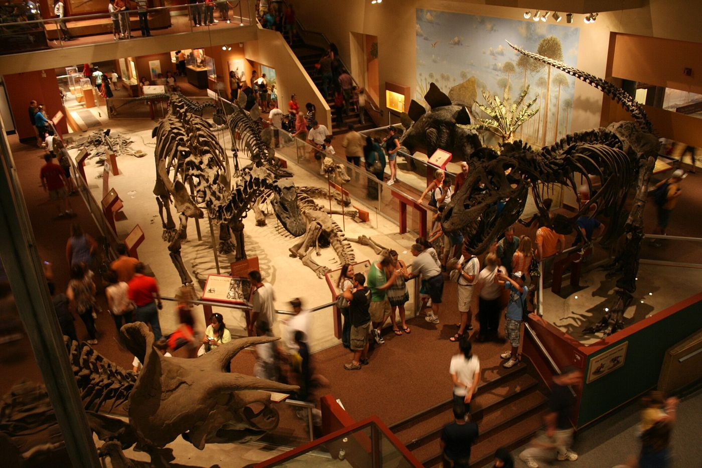
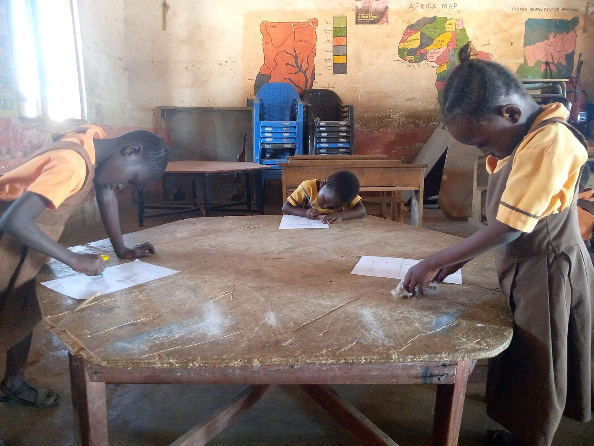
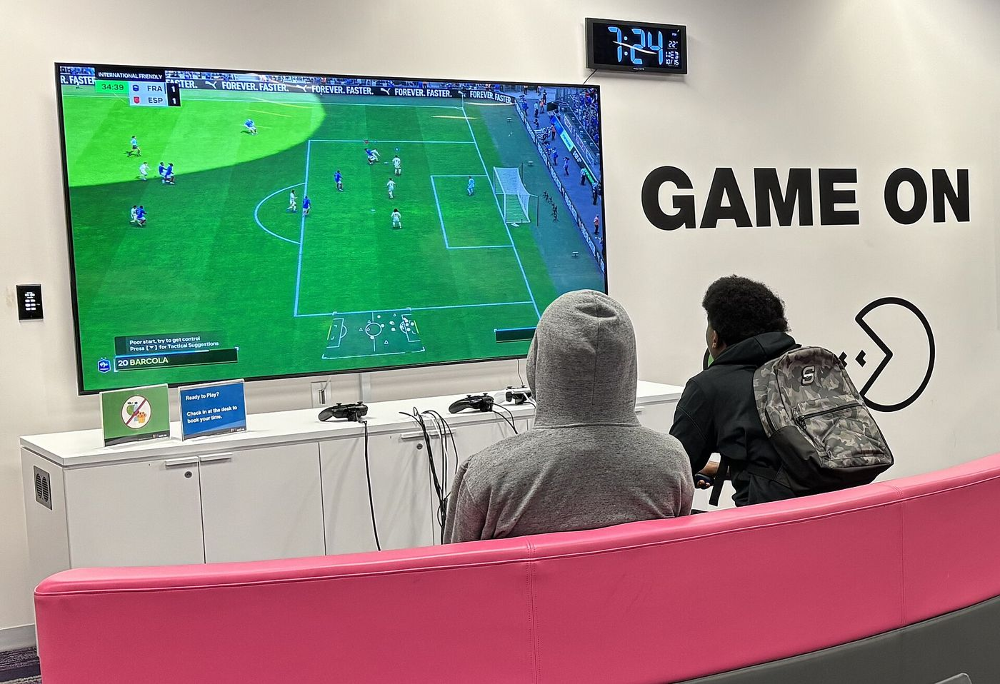

RÉVISION · GRAMMAIRE
Je le vois, je lui parle !Le COD et le COI dans la phrase
Salut Luka !
Aujourd'hui, tu révises le COD et le COI : comment les trouver dans la phrase, comment les remplacer par un pronom (le, la, les, lui, leur) et où placer ce pronom.
Heute wiederholst du das COD und das COI: wie man sie im Satz findet, wie man sie durch ein Pronomen ersetzt (le, la, les, lui, leur) und wo man dieses Pronomen hinstellt.
Le film ? Je le regarde. Mon ami ? Je lui parle.
Den Film? Ich schaue ihn. Mein Freund? Ich spreche mit ihm.
▶ Clique pour écouter. Répète la phrase à voix haute.
Klicke, um zuzuhören. Sprich den Satz laut nach.
DE : la traduction en allemand. Essaie d'abord sans !
Die Übersetzung auf Deutsch. Versuche es zuerst ohne!
Après chaque règle, tu t'entraînes tout de suite avec des exercices.
Nach jeder Regel übst du sofort mit Übungen.
★ Tes réponses restent enregistrées. À la fin, « À revoir » te montre les points à retravailler.
Deine Antworten bleiben gespeichert. Am Ende zeigt dir « À revoir », was du noch wiederholen musst.
1
Le COD
Das direkte Objekt
Le COD : le verbe + qui ? ou quoi ?
Das direkte Objekt (COD): Verb + wen? oder was?
Le COD (complément d'objet direct) complète le verbe directement, sans petit mot (sans à, sans de).
Das COD ergänzt das Verb direkt, ohne kleines Wort (ohne « à », ohne « de »). Auf Deutsch ist es meistens das Akkusativobjekt.
Pour le trouver, pose la question « sujet + verbe + qui ? » ou « quoi ? ».
Um es zu finden, frag: « Subjekt + Verb + wen? » oder « was? ».
Léonard peint quoi ? → un tableau = COD
Léonard peint un tableau.
Leonardo malt ein Bild.
Nous visitons le musée.
Wir besuchen das Museum.
Luka regarde ses amis.
Luka schaut seine Freunde an.
J'aime les vieilles photos.
Ich mag die alten Fotos.
💡 Astuce
Le COD est souvent juste après le verbe, sans préposition : je mange une pomme, tu attends le bus.
Das COD steht oft direkt nach dem Verb, ohne Präposition.
1
TROUVE LE COD
Lis la phrase. Quel groupe est le COD ?
Lies den Satz. Welche Wortgruppe ist das COD?
1
Les touristes admirent la cathédrale.
Die Touristen bewundern das Münster.
✓ Les touristes admirent quoi ? → la cathédrale.
2
Mon grand-père raconte une histoire.
Mein Großvater erzählt eine Geschichte.
✓ Mon grand-père raconte quoi ? → une histoire.
3
Le guide attend les élèves devant le musée.
Der Führer wartet vor dem Museum auf die Schüler.
✓ Le guide attend qui ? → les élèves.
4
Hier, Léa a pris des photos du château.
Gestern hat Léa Fotos von der Burg gemacht.
✓ Léa a pris quoi ? → des photos du château.
5
Au Moyen Âge, les habitants construisaient des remparts.
Im Mittelalter bauten die Bewohner Stadtmauern.
✓ Les habitants construisaient quoi ? → des remparts.
6
Tu connais cette ville ?
Kennst du diese Stadt?
✓ Tu connais quoi ? → cette ville.

2
Le COI
Das indirekte Objekt
Le COI : le verbe + à qui ? ou de qui ?
Das indirekte Objekt (COI): Verb + wem? / von wem?
Le COI (complément d'objet indirect) est relié au verbe par un petit mot : à (au, aux) ou de (du, des).
Das COI ist mit dem Verb durch ein kleines Wort verbunden: « à » (au, aux) oder « de » (du, des).
Luka téléphone à qui ? → à sa grand-mère = COI
Luka téléphone à sa grand-mère.
Luka ruft seine Großmutter an.
Le professeur parle aux élèves.
Der Lehrer spricht mit den Schülern.
J'écris à mon cousin.
Ich schreibe meinem Cousin.
Nous parlons de nos vacances.
Wir sprechen über unsere Ferien.
📋 Les verbes avec à
parler à, téléphoner à, écrire à, répondre à, donner à, dire à, montrer à, obéir à, sourire à
sprechen mit, anrufen, schreiben, antworten, geben, sagen, zeigen, gehorchen, zulächeln
⚠️ Attention : à Paris n'est pas un COI
Nous allons à Strasbourg. → On va où ? = un lieu, pas un COI.
Wir fahren nach Straßburg. → Wohin? = ein Ort, kein COI.
Le COI répond à à qui ? / à quoi ?, pas à où ? ni quand ?
Das COI antwortet auf « wem? / woran? », nicht auf « wo? » oder « wann? ».
Un verbe avec deux compléments
Ein Verb mit zwei Ergänzungen
Certains verbes ont un COD et un COI : on donne quelque chose (COD) à quelqu'un (COI).
Manche Verben haben ein COD und ein COI: man gibt etwas (COD) jemandem (COI).
donner+quoi ? (COD)+à qui ? (COI)
Je donne un livre à ma sœur.
Ich gebe meiner Schwester ein Buch.
Le guide montre la carte aux touristes.
Der Führer zeigt den Touristen die Karte.
un livre = COD · à ma sœur = COI
ein Buch = COD · meiner Schwester = COI
2
COD OU COI ?
Le groupe en gras est-il un COD ou un COI ?
Ist die fett gedruckte Wortgruppe ein COD oder ein COI?
1
Le roi parle à ses soldats.
Der König spricht mit seinen Soldaten.
✓ Le roi parle à qui ? → à ses soldats = COI.
2
Les enfants regardent un film.
Die Kinder schauen einen Film.
✓ Les enfants regardent quoi ? → un film = COD.
3
Tu réponds à la question ?
Antwortest du auf die Frage?
✓ Tu réponds à quoi ? → à la question = COI.
4
Maman prépare le repas.
Mama bereitet das Essen zu.
✓ Maman prépare quoi ? → le repas = COD.
5
Ma sœur écrit à son amie.
Meine Schwester schreibt ihrer Freundin.
✓ Ma sœur écrit à qui ? → à son amie = COI.
6
Le guide montre la vieille porte aux touristes.
Der Führer zeigt den Touristen das alte Tor.
✓ Le guide montre quoi ? → la vieille porte = COD.
7
Le guide montre la vieille porte aux touristes.
Der Führer zeigt den Touristen das alte Tor.
✓ Le guide montre la porte à qui ? → aux touristes = COI.
8
Nous allons au musée samedi.
Wir gehen am Samstag ins Museum.
✓ Nous allons où ? → au musée = un lieu, pas un COI.

3
Les pronoms COD et COI
Die Pronomen COD und COI
Remplacer le COD et le COI par un pronom
COD und COI durch ein Pronomen ersetzen
Pour ne pas répéter, on remplace le COD ou le COI par un pronom.
Um nichts zu wiederholen, ersetzt man das COD oder COI durch ein Pronomen.
| COD (qui ? quoi ?) | COI (à qui ?) | |
|---|---|---|
| je | me (m') | me (m') |
| tu | te (t') | te (t') |
| il / elle | le / la / l' | lui |
| nous | nous | nous |
| vous | vous | vous |
| ils / elles | les | leur |
COD → le, la, l', les
Tu regardes le film ? Oui, je le regarde.
Schaust du den Film? Ja, ich schaue ihn.
Il aime la musique. Il l'aime.
Er mag die Musik. Er mag sie.
Je vois mes amis. Je les vois.
Ich sehe meine Freunde. Ich sehe sie.
COI → lui, leur
Je parle à Paul. Je lui parle.
Ich spreche mit Paul. Ich spreche mit ihm.
Je parle à Léa. Je lui parle.
Ich spreche mit Léa. Ich spreche mit ihr.
J'écris à mes cousins. Je leur écris.
Ich schreibe meinen Cousins. Ich schreibe ihnen.
🧠 À retenir
lui = à lui et à elle (garçon ou fille) · leur n'a jamais de « s » devant un verbe.
« lui » = ihm und ihr (Junge oder Mädchen) · « leur » hat vor einem Verb nie ein « s ».
3
LE BON PRONOM
Choisis le bon pronom.
Wähle das richtige Pronomen.
1
Tu connais la nouvelle élève ? Oui, je ______ connais.
Kennst du die neue Schülerin? Ja, ich kenne sie.
✓ Oui, je la connais.
2
Tu téléphones à ton père ? Oui, je ______ téléphone.
Rufst du deinen Vater an? Ja, ich rufe ihn an.
✓ Oui, je lui téléphone.
3
Vous visitez les châteaux ? Oui, nous ______ visitons.
Besichtigt ihr die Burgen? Ja, wir besichtigen sie.
✓ Oui, nous les visitons.
4
Il répond à ses parents ? Oui, il ______ répond.
Antwortet er seinen Eltern? Ja, er antwortet ihnen.
✓ Oui, il leur répond.
5
Tu aimes ce tableau ? Oui, je ______ aime beaucoup.
Magst du dieses Bild? Ja, ich mag es sehr.
✓ Oui, je l'aime beaucoup.
6
Tu parles à ta sœur ? Oui, je ______ parle.
Sprichst du mit deiner Schwester? Ja, ich spreche mit ihr.
✓ Oui, je lui parle.
7
Le prof explique la leçon ? Oui, il ______ explique bien.
Erklärt der Lehrer die Lektion? Ja, er erklärt sie gut.
✓ Oui, il l'explique bien.
8
Tu montres tes photos à tes amis ? Oui, je ______ montre mes photos.
Zeigst du deinen Freunden deine Fotos? Ja, ich zeige ihnen meine Fotos.
✓ Oui, je leur montre mes photos.
4
RÉÉCRIS LA PHRASE
Remplace le groupe en gras par un pronom. Écris toute la phrase.
Ersetze die fett gedruckte Wortgruppe durch ein Pronomen. Schreib den ganzen Satz.
1
Je regarde la tour. →
Ich schaue den Turm an. → Ich schaue ihn an.
✓ Je la regarde.
2
Nous attendons nos amis. →
Wir warten auf unsere Freunde. → Wir warten auf sie.
✓ Nous les attendons.
3
Elle parle à son frère. →
Sie spricht mit ihrem Bruder. → Sie spricht mit ihm.
✓ Elle lui parle.
4
Ils obéissent à leurs parents. →
Sie gehorchen ihren Eltern. → Sie gehorchen ihnen.
✓ Ils leur obéissent.
5
Tu achètes le journal. →
Du kaufst die Zeitung. → Du kaufst sie.
✓ Tu l'achètes.
6
Je dis bonjour à la voisine. →
Ich sage der Nachbarin Hallo. → Ich sage ihr Hallo.
✓ Je lui dis bonjour.
4
La place du pronom
Die Stellung des Pronomens
Où se place le pronom ?
Wo steht das Pronomen?
En français, le pronom se place devant le verbe (en allemand, il est souvent après !).
Im Französischen steht das Pronomen VOR dem Verb (im Deutschen oft danach!).
sujet+pronom+verbe
Je le vois.
Ich sehe ihn.
➖ Avec ne … pas
Je ne le vois pas.
Ich sehe ihn nicht.
Il ne leur répond pas.
Er antwortet ihnen nicht.
ne + pronom + verbe + pas
ne + Pronomen + Verb + pas
➕ Avec deux verbes
Je vais le visiter.
Ich werde es besichtigen.
Tu peux lui parler ?
Kannst du mit ihm sprechen?
Le pronom va devant l'infinitif.
Das Pronomen steht vor dem Infinitiv.
🕰️ Au passé composé : devant l'auxiliaire
J'ai vu le film. → Je l'ai vu.
Ich habe den Film gesehen. → Ich habe ihn gesehen.
J'ai téléphoné à Léa. → Je lui ai téléphoné.
Ich habe Léa angerufen. → Ich habe sie angerufen.
Je ne l'ai pas vu.
Ich habe ihn nicht gesehen.
5
LE PRONOM À SA PLACE
Remets les mots dans l'ordre.
Bring die Wörter in die richtige Reihenfolge.
1
Remets les mots dans l'ordre.
Bring die Wörter in die richtige Reihenfolge.
✓ Je ne le vois pas.
2
Remets les mots dans l'ordre.
Bring die Wörter in die richtige Reihenfolge.
✓ Nous allons les aider.
3
Remets les mots dans l'ordre.
Bring die Wörter in die richtige Reihenfolge.
✓ Il lui a écrit une lettre.
4
Remets les mots dans l'ordre.
Bring die Wörter in die richtige Reihenfolge.
✓ Tu ne leur réponds pas.
6
RÉPONDS AVEC UN PRONOM
Réponds à la question avec un pronom.
Beantworte die Frage mit einem Pronomen.
1
Tu regardes la télé ? Non, je pas.
Schaust du fern? Nein, ich schaue nicht.
✓ Non, je ne la regarde pas.
2
Tu vas inviter tes amis ? Oui, je vais .
Wirst du deine Freunde einladen? Ja, ich werde sie einladen.
✓ Oui, je vais les inviter.
3
Tu peux parler au directeur ? Oui, je peux .
Kannst du mit dem Direktor sprechen? Ja, ich kann mit ihm sprechen.
✓ Oui, je peux lui parler.
4
Tu as vu ce film ? Oui, je vu.
Hast du diesen Film gesehen? Ja, ich habe ihn gesehen.
✓ Oui, je l'ai vu.
5
Tu as répondu à tes grands-parents ? Oui, je répondu.
Hast du deinen Großeltern geantwortet? Ja, ich habe ihnen geantwortet.
✓ Oui, je leur ai répondu.
6
Tu écoutes le guide ? Non, je pas.
Hörst du dem Führer zu? Nein, ich höre ihm nicht zu.
✓ Non, je ne l'écoute pas.
5
Le grand défi
Die große Herausforderung
Une journée à Strasbourg
Samedi, Luka visite Strasbourg avec sa classe. Le guide montre la cathédrale aux élèves. Luka la trouve magnifique ! Il prend des photos et il les envoie à sa mère. Le soir, il lui téléphone et il lui raconte sa journée.
Am Samstag besucht Luka mit seiner Klasse Straßburg. Der Führer zeigt den Schülern das Münster. Luka findet es wunderschön! Er macht Fotos und schickt sie seiner Mutter. Am Abend ruft er sie an und erzählt ihr von seinem Tag.
7
LE GRAND DÉFI
Lis le texte. Réponds aux questions.
Lies den Text. Beantworte die Fragen.
1
« Le guide montre la cathédrale aux élèves. » Le groupe en gras est…
« la cathédrale » ist…
✓ Le guide montre quoi ? → la cathédrale = COD.
2
« Le guide montre la cathédrale aux élèves. » Le groupe en gras est…
« aux élèves » ist…
✓ Le guide montre la cathédrale à qui ? → aux élèves = COI.
3
« Luka la trouve magnifique. » Le pronom « la » remplace…
Das Pronomen « la » ersetzt…
✓ la = la cathédrale.
4
« Il les envoie à sa mère. » Le pronom « les » remplace…
Das Pronomen « les » ersetzt…
✓ les = les photos.
5
« Il lui téléphone. » Le pronom « lui » remplace…
Das Pronomen « lui » ersetzt…
✓ lui = à sa mère.
6
Le guide parle aux élèves. → Le guide parle.
Der Führer spricht mit den Schülern. → Der Führer spricht mit ihnen.
✓ Le guide leur parle.
7
Luka n'oublie pas son appareil photo. → Luka ne oublie pas.
Luka vergisst seine Kamera nicht. → Luka vergisst sie nicht.
✓ Luka ne l'oublie pas.
8
Il va montrer ses photos à son père. → Il va montrer ses photos.
Er wird seinem Vater seine Fotos zeigen. → Er wird ihm seine Fotos zeigen.
✓ Il va lui montrer ses photos.
✍️ À toi d'écrire
Réponds à ces 3 questions avec une phrase complète et un pronom (le, la, les, lui, leur).
Beantworte diese 3 Fragen mit einem ganzen Satz und einem Pronomen.
Pour t'aider :
✔ Vérifie ton texte
- ✔J'ai mis le pronom devant le verbe.Ich habe das Pronomen vor das Verb gesetzt.
- ✔J'ai utilisé le / la / les pour qui ? quoi ?Ich habe le / la / les für wen? was? benutzt.
- ✔J'ai utilisé lui / leur pour à qui ?Ich habe lui / leur für wem? benutzt.
Exemple de texte
Oui, je les adore. Oui, je lui parle tous les jours. Oui, je les ai faits hier soir.
Ja, ich liebe sie. Ja, ich spreche jeden Tag mit ihr. Ja, ich habe sie gestern Abend gemacht.
★
Mes phrases utiles
Meine nützlichen Sätze
Écoute et répète ces phrases. Elles t'aident le jour de l'épreuve !
Hör zu und sprich diese Sätze nach. Sie helfen dir am Tag der Prüfung!
Léonard peint un tableau : un tableau est le COD.
Leonardo malt ein Bild: « ein Bild » ist das COD.
Je téléphone à ma grand-mère : à ma grand-mère est le COI.
Ich rufe meine Großmutter an: « à ma grand-mère » ist das COI.
Tu regardes le film ? Oui, je le regarde.
Schaust du den Film? Ja, ich schaue ihn.
Je parle à Léa. Je lui parle.
Ich spreche mit Léa. Ich spreche mit ihr.
J'écris à mes cousins. Je leur écris.
Ich schreibe meinen Cousins. Ich schreibe ihnen.
Je ne le vois pas.
Ich sehe ihn nicht.
Je vais le visiter.
Ich werde es besichtigen.
Je l'ai vu. Je lui ai téléphoné.
Ich habe ihn gesehen. Ich habe ihn angerufen.

★
À revoir
Zum Wiederholen
Clique sur le lien pour relire la règle, puis écoute la bonne phrase et répète-la.
Klicke auf den Link, um die Regel noch einmal zu lesen. Hör dann den richtigen Satz an und sprich ihn nach.
Pas encore d'erreur. Les points à revoir apparaissent ici quand tu fais les exercices.
| Ex. | La bonne réponse | Ma réponse | La règle |
|---|